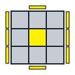
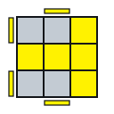
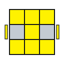
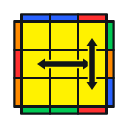
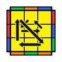
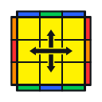
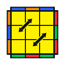

CubeLab Training · Phase 2C
Compact 3×3 last-layer diagram previews
Ten representative diagrams generated from verified cube states in the traditional compact 3×3 speedcubing convention. OLL now uses a brighter yellow, a uniformly light 2 px outer border and internal grid, and closer, slightly thinner side bars. PLL uses a lighter 2 px inner grid and matching side outlines, with a slightly bolder 3 px face border and side stickers joined directly to the face border and vibrant side colours, the approved OLL yellow, fixed-size arrowheads and longer edge arrows. T’s vertical corner swap is centred on its corner column; Gc retains its outer and inner lanes with a corrected UFL junction. The remaining 68 diagrams are intentionally not generated until these visual styles are approved.
Legend
- U sticker on top (OLL)
- Other top-face sticker (OLL)
- Sideways-facing U sticker bar (OLL)
- U face (PLL)
- Front
- Right
- Back
- Left
- Permutation arrow (PLL)
OLL

128 px1212|1111 128 px
128 px0222|0000
128 px0012|1010 128 px
128 px1212|1010
128 px0000|0101PLL
 128 px
128 pxUBL,UFL,UFR,UBR|UB,UF,UR,UL
128 pxUBL,UBR,UFL,UFR|UR,UF,UL,UB
128 pxUBL,UBR,UFL,UFR|UL,UF,UB,UR
128 pxUBL,UFL,UFR,UBR|UF,UR,UB,UL
128 pxUBL,UFL,UFR,UBR|UL,UB,UR,UFDark surface
The same static SVGs on a dark panel. Each case is shown at 128 px full size and 64 px for the typical Training UI size. The diagram palette does not depend on the application theme.
1212|1111128 px0222|00000012|1010128 px1212|10100000|0101128 pxUBL,UFL,UFR,UBR|UB,UF,UR,ULUBL,UBR,UFL,UFR|UR,UF,UL,UBUBL,UBR,UFL,UFR|UL,UF,UB,URUBL,UFL,UFR,UBR|UF,UR,UB,ULUBL,UFL,UFR,UBR|UL,UB,UR,UFPreview checkpoint only. OLL uses a uniformly lighter 3×3 face, closer and slightly thinner side bars, and a brighter yellow. OLL is visually approved and unchanged. PLL awaits owner visual approval: thinner matching inner lines and side outlines, a slightly bolder main border, flush side stickers, matching OLL yellow, fixed-size heads, stronger edge shafts, tighter tip clearance and a shared Gc corner junction. The remaining 68 assets and Phase 3 remain out of scope; F12 is unresolved. Static SVG files are stored in src/assets/training/diagrams/; no runtime SVG generation is part of the application. The reference images are internal design references and are not distributed with the application.
PLL before/after comparison, including 2× geometry diagnostics